Professor: Dimitrios Sacharidis
Student e-mail: jose.lorencio.abril@ulb.be
This is a summary of the course Management of Data Science and Business Workflows, taught at the Université Libre de Bruxelles by Professor Dimitrios Sacharidis in the academic year 22/23. Most of the content of this document is adapted from the course notes by Sacharidis, [4] and the basic book from the bibliography, [2], so I won’t be citing them all the time. Other references will be provided when used.
Business Process Management (BPM) is a body of methods, techniques, and tools to identify, discover, analyze, redesign, execute, and monitor business processes in order to optimize their performance.
This means that BPM is interested in understanding how an organization performs their work, focusing in the abstraction of the chain of activities performed by different actors of the organization, and not that much in how the actual individuals carry out these activities. These chains of tasks carried out in an organization with a defined objective that are subject to the BPM analysis are called business processes.
More precisely, Dumas defines a business process as a collection of inter-related events, activities, and decision points that involve a number of actors and objects, which collectively lead to an outcome that is of value to at least one customer.
The relevant concepts in this definition are the following:
Events: things that have no duration. For example, receiving an e-mail.
Activities: things that take time to be fulfilled. For example, answering a received e-mail.
Decision points: these points happen when the process changes depending on a decision or an outcome of a past activity. For example, we might answer to the e-mail only if it is relevant for us and let it be otherwise.
Actors: people, organizations and systems that take part in a process. For example, me and a guy from the other side of the world claiming to be my cousin and willing to make me rich.
Objects: the objects involved in the process, being physical or informational objects.
BPM Notation (BPMN) is a visual language developed to model business processes and facilitate their analysis, understanding and communication between different stakeholders.
Example 1.1. Some common processes.
Order-to-cash: type of process performed by a vendor. It starts when a customer submits an order to purchase a product and ends when the product has been delivered to the customer and the customer has made the payment for it.
Quote-to-order: typically precedes an order-to-cash process. It starts from the point when a supplier receives a Request for Quote (RFQ) from a customer, and ends when the customer in question places a purchase order based on the received quote.
Quote-to-cash: is the combination of two corresponding quote-to-order and order-to-cash processes.
Procure-to-pay: starts when someone in an organization determines that a given product or service needs to be purchased. It ends when the product has been delivered and paid for. A procure-to-pay process implies a quote-to-cash process on the supplier’s side.
The BPM procedure is divided into a series of steps, which are ilustrated in Figure 1 and are can be summed up as follwos:
Process identification: identify all processes that take place in an organization’s work.The outcome of this phase is a process architecture: a collection of inter-linked processes covering the bulk of the work that an organization performs in order to achieve its mission in a sustainable manner. To create such an architecture which is able to consistently produce positive outcomes, it is needed to:
Measure the value delivered by processes. There are different types of measures, related to cost, time, amount of errors,... And it is needed to decide which measures will be taken into account.
Process discovery: understand the business process in detail. After this phase, we obtain as outcome the as-is process models, which reflect the understanding that people in the organization have about how work is done. These are commonly expressed by means of diagrams, which help in the comprehension of the process, and enhance the dicussion about it. It is usual to use the BPMN.
Process analysis: identification of issues and opportunities for process improvement.
Process redesign: identification and analysis of potential remedies for the issues encountered during the analysis phase. The output of this phase is new redesigned version of the process, the to-be process.
Process implementation: it is needed to make the necessary changes in the ways of working and the IT systems of the organization so that the to-be process can be put into execution. These are in fact the two facets that an organization faces when dealing with process implementation:
Organizational change management.
Process automation
Process monitoring: over time, adjustments may be required in the implemented business process when it does not meet expectations any longer, so the process needs to be monitored.
Finally, we would go back to the process discovery phase, as this is an iterative approach, where processes are constantly changed to deal with the inherent changing nature of businesses.
In addition, it is important to ensure that BPM initiatives are aligned with the strategic goals of the organization, this is called strategic alignment. Also, the roles and responsibilities should be clearly defined, as well as monitored to ensure consistency. This is the purpose of governance. It is also important that the participants are informed of the BPM initiatives of the organization that affect their processes and to develop an organizational culture responsive to process change and open to embrace process thinking.
Process identification consists of identifying an organization’s processes and prioritize their management based on certain criteria, in order to understand the organization and maximize the value of the BPM projects carried out.
Process identification can be divided in two substeps: the designation step and the prioritization step.
In the designation step we aim at enumerating the main processes in the organization and to determine their scope. At the end of this step we will have developed the process architecture of the organization.
The process architecture has different types of processes, which are typically:
Core processes: those processes that cover the essential value creation of the company. Examples are design and development, manufacturing, marketing, delivery,...
Support processes: are those processes that enable the execution of the core processes. Examples are human resource management, IT management, accounting,...
Management processes: those processes that provide directions, rules and practices for the core and support processes. Examples are strategic planning, budgeting, compliance,...
Sequence or horizontal: relationship in which there is a logical sequence between two processes.
Decomposition or vertical: there is a decomposition in which one specific process is described in more detail in one or more subprocesses.
Specialization: when there exist several variants of a generic process
The value chain is a chain of processes that an organizations performs to deliver value to customers and stakeholders. Basically, is a horizontal summary of the organization processes, disregarding decomposition and specialization.
Some guidelines to identify horizontal boundaries in value chains are:
Change of key business object in the process.
Change of granularity of main business object.
Change in frequency/time.
Change in intermediate outcome/resolution/objective.
A chevron is a collapsed value chain (e.g. Quote-to-cash can be a chevron of a Cuote-to-order and Order-to-cash value chain).
A box is a group of processes or value chains.
Another way to model the process architecture of a company is classify the processes that are related into groups.
In both modeling cases, we can see the whole picture as a hierarchical view, in which we can see the general features and processes in lower levels, and go into detail when we increase the depth in hierarchy.
Example 2.1. A hierarchical process architecture of an insurance company can be modeled as follows.
The first level gives an overview of the processes of the company, indicating which are core, support or management related.
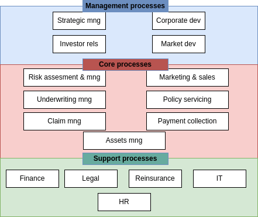
The second level can give a more detailed vision on each area. For example, for the management processes we could have the main processes described in terms of their subprocesses:
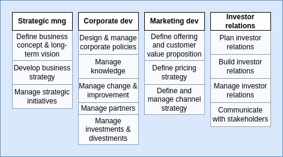
Then, in the third level we could do the same with each of this subprocesses, further dividing them into more detailed sub-subprocesses. An so on for level 4, 5,...
Another way to perform the designation step is to use reference models, which are templates that are used in common processes. For example, the Information Technology Infrastructure Library (ITIL) or the APQC Process Classification Framework (PCF).
Once we have defined the process architecture of the organization, it is important to reflect on these processes, to understand which of them are working as they should, which are problematic, their scope,...
Processes can be analyzed in three dimensions:
Importance: a process is more important when it has greater impact on the organization’s strategic objectives.
Health: a process is healthy when it is working as expected (or better than expected).
Feasibility: feasibility refers to how susceptible is a process to improve when tackled with BPM.
A usual visual way to address this issues is the prioritized process portfolio, in which processes are plotted in a 2D grid with Health in one axis going from Poor to Good and Importance in the other axis going from Low to High. Feasibility can be shown by a color scale on the points. In Figure 2 an example is shown.
It is common to define zones of prioritization: the upper-left zone is called the Short-term action zone because those are important processes with poor health, so they should be addressed as soon as possible. The bottom-left zone is the Possible zone because they are processes that needs to be improved in terms of health, but are not very important, so they can wait. The bottom-right zone is the Strategic fit zone, in which there are processes that are performing well but are not very important to the strategic need of the organization, but as they are working good, we might think on how to fit them into our strategy. Finally, the upper-right zone is the Challenge zone, where important activities are performing good, so they are working as we want and there is no need to do anything about them, unless we want to further improve them.
Processes that are near in the graph should be selected to focus on their improvement based on their feasibility. In the example, we would focus on P6 before P3 because it is more feasible.
Process modeling is useful for many reasons:
To understand the process.
To share our understanding of it with the people who are involved with it.
To reflect on the process.
To analyze the process.
To measure different aspects of the process, extracting performance indicators.
To improve the process.
So process modeling is a key aspect of BPM, because it is the tool that allow us to perform deeper evaluations and techniques.
BPM Notation (BPMN) is a visual language developed to model business processes and facilitate their analysis, understanding and communication between different stakeholders. Let’s define the different concepts handled in BPMN:
A BPMN process model is a graph consisting of four types of core elements. An example can be seen in Figure 3. The core elements are:
Activities: activities are steps in a process that needs to be actively done and take time.
Activities are modeled using rectangles.
Activities are named: verb + noun.
Events: momentary steps that do not need processing, but are usually the trigger to some activity.
Events are modeled using circles.
Events are name: noun + past-participle verb.
Gateway: decision points where the path to follow is selected according to some criteria.
Gateways are modeled using diamond shapes.
The decision criteria of the gateways must be written on the outgoing sequence flows, not as activities1 .
Sequence flow: rows indicating the sequence order of the activities/events/gateways.
A token is a new instance of a process. A token lifecycle starts when a process is triggered and ends when it reaches an endpoint of the process. Note that a process can have several active tokens at the same time
As we can see in Figure 3, there are different kinds of events:
Start event: triggers a new process instance by generating a token that traverses the sequence flow. These are modeled with a light-lined circle.
End event: signals that a process instance has completed with a given outcome by consuming a token. These are modeled with a bold-lined circle.
Also, in the example we see that the gateway has a cross inside, and this also has a meaning and there are several types of gateways:
XOR gateway: captures decision points in which only one path can be taken among all of them (XOR-split) and points where alternative flows are merged (XOR-join). The latter represent the possibility that some alternative paths can finish in the same way. For example, in Figure 4 we can see an example of this. The first diamong is a XOR-split and the second one is a XOR-join.
AND gateway: provides a mechanism to create and synchronize parallel flows. An AND-split would take all the possible outgoing paths and an AND-join would wait for all the incoming paths to end before continuing. In Figure 5 we can see an example of the AND gateway: in an airport, both the person and the luggage need to pass the security screening, but this can be considered different activities that can be done in parallel.
OR gateway: provides a mechanism to create and synchronize n out of m parallel flows, in which n might not be known a priori. An OR-split takes all branches whose condition is fulfilled, or the default branch if no condition is fulfilled. The OR-join proceeds when all active incoming paths have completed. For this reason, the OR gateway is harder to interpret than the other two, because it needs to have a global view of what is happening in the process, while the other gates only needs the local information to their decision points. An example of use of this gateway is shown in Figure 6, in which an order can have items that are stored in different warehouses, so each warehouse might or might not need to be forwarded a sub-order.
Even though there are not precise rules about how to name everything in BPMN, there are general naming conventions2 :
It is advisable to give a name to every event and task.
It is better to avoid generic verb such as handle or record.
Label XOR-split with a condition.
Not a naming convention but still an useful guideline: try model in groups, i.e., pair up each split gateway with the correspondant join gateway without adding more gateways in between, when possible.
Until now, we have seen how to model processes that always go forward, but there exist situations in which some activities need to be repeated until a satisfactory outcome is achieved: this is called rework or repetition and is achieved by means of a XOR-join called the entry point followed by the work that might need to be repeated and a XOR-split called the exit point that checks whether the work needs to be redone or not. This is illustrated in Figure 7, in which a student studies and takes an exam until it is passed.
Now, we are going to cope with the fact that it is possible to have different departments of a company involved in the same process, or even different companies. For this, pools and lanes are used:
A pool captures a resource class and is generally used to model a business party.
A lane is a resource sub-class within a pool and is generally used to model departments, internal roles or software systems.
An example is shown in Figure 8. In this case, the pool is My household and the two lanes are the two brothers involved in the process.
Note that when several pools are part of a process, it is usually the case that only some specific information is asked from one pool by the other to continue the process and that, in any case, other pools are not performing the process and thus it must not depend on them to finish. This means that sequence flow arrows cannot go from one pool to another, because in that case a process would be involving two different resource class and this is not desired.
To communicate different pools we use message flow lines, which represents exactly this: a flow of information between two pools. A message flow can connect:
Directly to the boundary of a pool: captures an informative message to/from that party.
Directly to a specific activity or event within a pool: captures a message that triggers a specific activity/event within that party.
This two possibilities are depicted in Figure 9.
As we have said before, there are some syntactic rules regarding pools, lanes and flows:
A sequence flow cannot cross the boundaries of a pool.
Both sequence flow and message flow can cross the boundaries of lanes.
A message flow cannot connect two flow elements within the same pool.
A modeling advice
It is usually useful to start modeling with one single white-box pool:
Initially, put the events and tasks in the pool of the party who is running the process.
Leave all other pools as black boxes.
Once this is done and the process diagram inside the white-box pool is complete, model the details in the other pools if it is necessary.
In addition to all the objects that we have seen until this point, BPMN also allows the definition of data objects and stores:
A data object captures an artifact required (an input) or produced (an output) by an activity. They are modeled as a sheet of paper.
A data store is a place containing data objects that must be eprsisted beyond the duration of the process instance. It is used by an activity to recover an input data object or to store an output data object. They are modeled as a hard disk.
We need to be careful with the use of artifacts, because they can be useful if used appropriately, but when we detail every input and output object in a process, the diagram can become very crowded and hard to understand: keep it simple!
A text annotation is a mechanism to show additional information to the reader, but this information does not affect the workflow of the process.
It is often the case that a BPMN diagram can be long and composed of several parts, and some of these parts can be considered subprocesses of the big process. The usage of subprocesses is useful for several reasons:
It allows to decompose large models into smaller ones, making them easier to understand and maintain.
Sometimes, the same subprocess can be re-used in several processes.
If can be helpful to delimit parts of the process that can be repeated or interrupted.
Subprocesses can be in expanded or collapsed notation. A subprocess in expanded notation is showing what the subprocess do, from start to end, while in collapsed notation it just have a plus sign indicating that it is a subprocess. In some modeling tools it is possible to click it and access its interior to see the whole subprocess. As an example, see Figure 10, where both flavours are shown. The image in the bottom is the result of expaning subprocess 1 clicking its blue icon.
Now, we are going to see that we can add ’modifiers’ to activities, to increment their semantics. First, we are going to see the activity loop markers, which allow us to state that a task or a subprocess may be repeated multiple times. It is indicated with a circular arrow pointing to itself, as in Figure 11. In the case of a subprocess loop, the stop condition is usually written as a text annotation and the last activity of the subprocess must be a decision activity.
The next modifier is the multi-instance activity marker, which provides a mechanism to indicate that an activity is executed multiple times concurrently. It is useful when an activity needs to be executed by several entities or workers. It is indicated with three vertical lines, as in Figure 12. The cardinality (quantity of parallel instances) is usually indicated with a text annotation.
There more types of events than just start and end events:
In terms of the workflow stage, an event can be:
Start event: starts a process.
Intermediate event: they occurr during the process, they do not trigger the process nor end it.
End event: they mark the end of the process.
In terms of the semantics of the event, it can be:
Untyped event: indicates that an instance of the process is created or completed, without specifying the cause for creation/completion.
Start message event: indicates that an instance of the process is triggered when a message is received.
End message event: indicates that an instance of the process is completed when a message is sent.
Intermediate message event: indicates that an event is expected to occur during the process. The event is triggered when a message is received or sent.
Start timer event: indicates that an instance of the process is created at certain date(s)/time(s).
Intermediate timer event: triggered at certain date(s)/time(s) or after a time interval has elapsed since the moment the event is enabled.
Sometimes, a decision has to be delayed until some event happens. For example, conditions of the form ’the first thing to happen among these three’ lead to this situation. In such cases, we can use the event-driven XOR split.
Exceptions are events that deviate a process from its normal course. The simplest form of exception is to notify that there is an exception which leads to a negative outcome. This can be done via the terminate end event, which forces the whole process to abort, wiping off all tokens left behind. But exceptions can also be handled if they enclose a subprocess that gets interrupted when the exception occurs to perform the exception handling. The types of exceptions are:
External: something goes wrong outside the process, and the execution of the current activity must be interrupted. It is handled with the message event.
Internal: something goes wrong inside an activity, whose execution must thus be interrupted. It is handled with the error event. The error event also has an error end event version which generates an error event. The error catching intermediate event version consumes these error events and can treat them when it is attached to the boundary of an activity.
Timeout: an activity takes too long and must be interrupted. Handled with the timer event.
There are times in which we may want to trigger an activity in parallel to the normal flow. This can be achieved using non-interrupting boundary events, which can be of type message or timer.
All this information is summarized in Table 1.
| Start | Intermediate | Decision | Exception handling | End | Type |
| Untyped event | |||||
| Start message event | |||||
| End message event | |||||
| Intermediate message event | |||||
| Start timer event | |||||
| 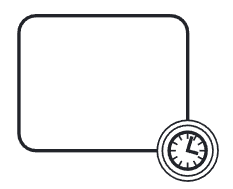 | Intermediate timer event | ||||
| Event-driven XOR split | |||||
| Terminate end event | |||||
| Error event | |||||
| 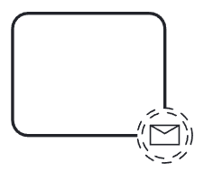 | Non-interrupting message event | ||||
| 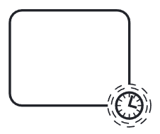 | Non-interrupting timer event | ||||
Business process analysis is the art and science of analyzing a process, with the aim of understanding it and being able to improve it later.
It is an art in the sense that a process is by nature one possibility among potentially infinity of them. Thus, having the wit to detect a step that is not really necessary, or to come up with a totally different process which achieves the same results with less resources is not something that follows a fixed set of rules. This part of process analysis is the qualitative analysis, and only some principles and techniques can be defined to help us in a wide range of usual situations.
The science side of business process analysis is the quantitative analysis. This term encapsulates a set of techniques for analyzing business processes quantitatively in terms of process performance measures such as cycle time, waiting time, cost,...
In this chapter we are focusing on the qualitative part of the process analysis. We are going to study several techniques: value-added analysis, waste analysis, issure register and root cause analysis.
This is a technique used to identify unnecessary steps in a process in with the objective to elimitate them. A step might be a task in the process or part of a task. The points to follow are:
Subdivide the process tasks into their constitutive steps:
Steps performed before the task.
The task itself, possibly subdivided into smaller steps.
Steps performed after a task to prepare for the next one.
Classify each step as:
Value adding (VA): a step that serves directly to obtain positive outcomes of the process, thus adding value for the customer. For example, in a supermarket inventory process, it is a value adding step to fill the emptied shelves. Some questions that can be asked:
Is the customer willing to pay for this step?
Would the customer agree that this step is necessary to achieve their goals?
If the step is removed, would the customer perceive that the end product or service is less valuable?
This kind of steps is where we should maximize the effort put on.
Business value-adding (BVA): a step that does not directly contribute to positive outomes of the process but are necessary for the business. In the supermarkeet inventory process, annotating which products are being sold slower than expected is not directly adding value to the client, but it is necessary for the business to modify their procurements with the distributors. Some questions to ask:
Is this step required in order to cllect revenue, to improve or grow the business?
Would the business suffer in the long-term if this step was removed?
Does it reduce risk or business losses?
Is this step required in order to comply with regulatory requirements?
We want to minimize the effort put on this king of step, but we cannot eliminate them nor disregard them.
Non-value adding (NVA): these are steps that are not VA nor BVA, and these are which we want to eliminate from the processes, to improve the efficiency of the processes. In the supermarket inventory process, imagine it is needed to write on paper the inventory and after that scanning it to digitalize the document. In this case, this is a non-value adding step, which could be substitute by doing the inventory directly in a digital mean.
Usual non-value adding steps include handovers, context switches, waiting times, delays, rework or defect correction.
While elimination of NVA steps is generally considered a desirable goal, elimination of BVA steps should be considered as a trade-off, given that BVA steps play a role in the business. Prior to eliminating BVA steps, one should first map BVA steps to business goals and business requirements. Given a mapping between BVA steps on the one hand and business goals and requirements on the ohter, the question then is: What is the minimum amount of work required to perform the process to the satisfaction of the customer, while fulfilling the goals and requirements associated to the BVA steps in the process?
Waste analysis can be seen as the reverse of value-added analysis. While in VA analysis we look at the process from a positive angle, trying to identify value adding steps, in waste analysis we take the negative angle, trying to find waste everywhere in the process. Some of these wastes can be traced down to specific steps in the process, but others are hidden in between steps or throughout the process.
Basically, there have been identifies seven types of waste, which can be classified into three categories:
Move: wastes related to movement. It includes:
Transportation: send or receive materials or documents, taken as input or output by the process activities. For example, when some certified documents needs to be send to the university for its admission process.
Motion: motion of resources internally within the process. For example, when some paper needs to be signed by a specific person in the company and the one who needs this signature is moving around the building looking for him.
Hold: wastes arising from holding something. It includes:
Inventory: holding materials in inventory or having too many activities to be done (too much work-in-progress). For example, in some universities, the applications are not reviewed until the application period has ended, so lots of application are waiting to be handled for a long time.
Waiting: when there are tasks waiting for materials, input data or resources; or when there are unused resources waiting for work (idle resources). For example, when there is a request waiting for someone to approve it.
Overdo: wastes arising from doing more than is necessary in order to deliver value to the customer or the business. It includes:
Defects: correcting or compensating for a defect or error. Usually encompassed under rework loops. For example, in the university admissions process, when an application is sent back to the applicant for modification, the request needs to be re-assessed later.
Overprocessing: this refers to tasks that have been unnecessarily performed, because they did not affect the outcome of the process. For example, checking the validity of the transcripts of a students which does not meet the minimum GPA would be overprocessing, because he will be rejected no matter the outcome of the validity check.
Overproduction: this occurs when unnecessary process instances are performed, producing outcomes that do not add value upon completion. For example, in university admissions, about 3000 applications are submitted, but only 600 are considered eligible after assessment. This means that 4/5 of the process instances have a negative outcome.
An issue register is a listing that provides a detailed analysis of each issue and its impact in the form of a table with a pre-defined set of fields, which are usually the following:
Name of the issue: understandable by stakeholders.
Description: short description of the issue focused on the issue itself.
Priority: a number that state the importance of the issue with respect to the other issues.
Data and assumptions: any data or assumptions made in the estimation of the impact of the issue.
Qualitative impact: description of the impact of the issue in qualitative terms.
Quantitative impact: an estimate of the impact of the issue in quantitative terms.
Similarly to process prioritization, we can define a priority chart for issues. It is called the PICK chart, and plots:
The difficulty of solving the issue in the X axis, from EASY to HARD.
The payoff of solving the issue in the Y axys, from LOW to HIGH.
Each quadrant is labeled as:
Implement: the EASY-HIGH quadrant. It contains those issues that we should solve first, because they give high payoff and are easy to solve.
Challenge: the HARD-HIGH quadrant. It contains those issues that should be solved after those in I, because they give high payoff, but they are hard to solve.
Possible: the EASY-LOW quadrant. It contains those issues that should be left for when we are bored, because they give low payoff and are easy to solve.
Kill: the HARD-LOW quadrant. It contains those issues that we should forget about, because they give low payoff and are hard to solve.
A sample PICK chart is depicted in Figure 13.
Root cause analysis is a family of techniques that helps analysts to identify and understand the root cause of issues or undesirable events. It is useful to identify and to understand the issues that prevent a process from having a better performance. It encompasses a variety of techniques, which generally include guidelines for interviewing and conducting workshops with relevant stakeholders, as well as techniques to organize and to document the ideas generated during these interviews. We are going to explain two of these techniques: cause-effect diagrams and why-why diagrams.
They depict the relationship between a given negative effect and its potential causes. A well known categorization for cause-effect analysis are the 6 M’s:
Machine: factors stemming from technology used.
Method: factors stemming from the way the process is designed, understood or performed. Usually occur because of unclear assignments of responsibilities or instructions, insufficient training of a lack of communication.
Material: factors stemming from input material or data.
Man: factors stemming from wrong assessment or incorrect performance of steps because of lack of training, clear instructions or motivation, or too high demands towards process workers.
Measurement: factors stemming from reliance on inaccurate estimations or miscalculations.
Milieu: factors outside the scope of the process.
These diagrams identify all factors related to each of these dimensions in relation to one issue, as depicted in Figure 14.
Why-why diagrams work by recursively ask the question:
Why has this happened?
This question is asked multiple times until a factor that stakeholders perceive to be a root cause is found. A common belief in the field of quality management is that answering the question five times recursively allows one to pin down the root causes of a given negative effect. This is known as the 5 Why’s principle.
This technique is used to structure brainstorming sessions for root cause analysis:
Start with the issue to analyze: first, agree on a name for it. In this step it is possible to find that there were more than just one issue, so we should select one among these to analyze them separately.
Put the selected issue as the root of the tree.
At each level of the tree ask the ’why’ question. Possible factors may be identified. These factors are added to the tree as nodes and the process is repeated.
When getting deeper in the tree, we should focus on factors that can be solved and the leave of the tree should corresponod to factors that are fundamental in nature, meaning they cannot be explained in terms of other factors. These are the root causes and ideally they should be such that they can be eliminated or mitigated.
A sample why-why diagram is depicted in Figure 15.
Qualitative analysis is a valuable tool to gain systematic insights into a process, but its results are sometimes not detailed enough to provide a solid basis for decision making. Now we are going to study techniques to analyze business processes quantitatively in terms of process performance measures. We will study flow analysis, queueing analysis and simulation.
Flow analysis is a family of techniques to estimate the overall performance of a process given some knowledge about the performance of its tasks.
The process’ cycle time can be computed if we know its tasks’ cycle times, but we have seen several types of flows a process can follow, and the computations vary for each of them:
The cycle time of a sequential fragment of a process is the sum of the cycle times of the tasks in the fragment:

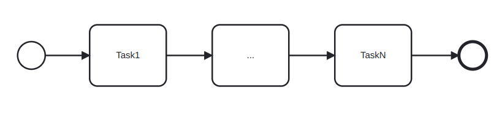
The cycle time of the fragment of the process between the XOR-split and the XOR-join is the weigthed average of the cycle times of the branches in-between. The term branching probability denotes the frequency with which a given branch is taken:
where wi is branch probability of Task i. This type of fragment is called a XOR-block.
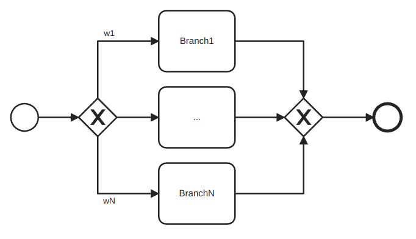
The cycle time of an AND-block, understood as the analogous of a XOR-block but with AND-gateways is computed as the maximum of the cycle times of the branches in-between:
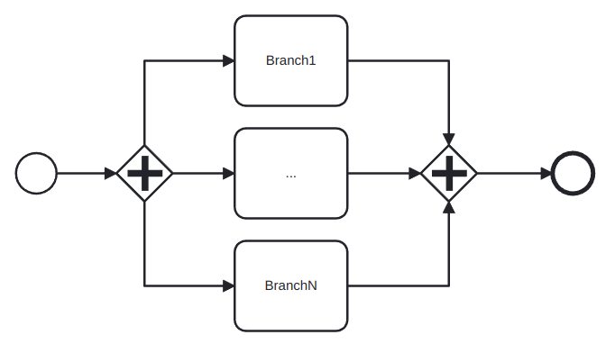
The cycle time of a rework fragment with all the work between the XOR gates is
where T is the time taken for all the work between the gates and r is the probability of rework:
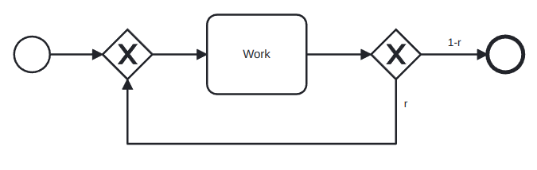
Proof. Let’s define Tn as the average time taken after n steps of this segment. Clearly, we have
then, the second step takes 0 time with probability 1 - r and T time with probability r, so
For the third, a similar reasoning gives
Reasoning inductively, we have
Also, note that the cycle time is the limit when n goes to infinity of this series
and note that 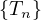n is a geometric series, so
In this case, r is called the rework probability and the block is called a rework block.
If there is also work in the flow that goes back:
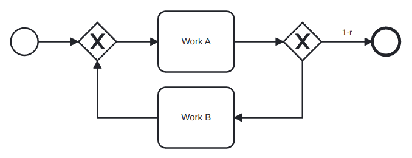
But this scenario can be rewritten as:
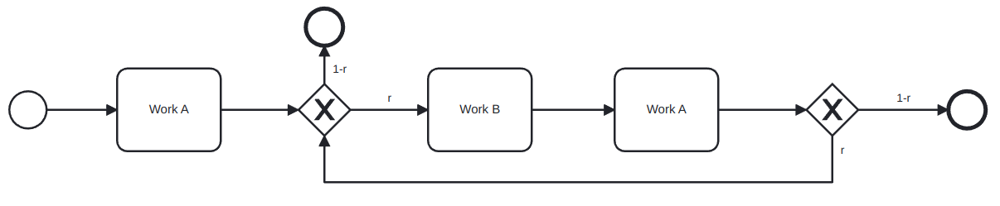
So the cycle time is
Example 6.1. Computing the cycle time of a process.
Consider the process:
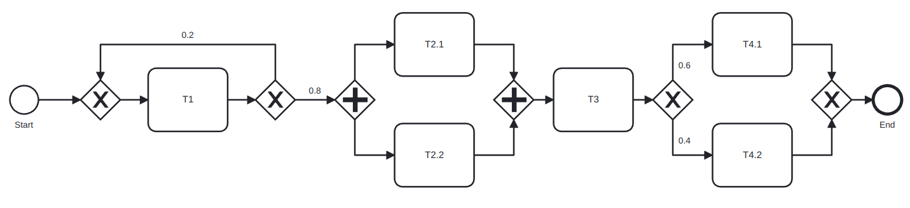
And compute its cycle time:
Definition 6.2. The cycle time can be divided into waiting time and processing time:
Waiting time is the portion of the cycle time where no work is being done to advance the process.
Processing time refers to the time that participants spend doing actual work.
The ratio of overall processing time relative to the overall cycle time is called the cycle time efficiency:
where PT is the processing time, computed with the same rules as the cycle time, but only with the processing time of each task.
If CTE is close to 1, it indicates that there is little room for improving the cycle time unless relatively radical cahnges are introduced in the process. A ratio close to 0 indicates that there is a significant amount of room for improving cycle time by reducing the waiting time.
Flow analysis has some limitations:
Not all models are structured in blocks, and this difficults the computations.
Cycle time analysis does not consider the rate at which new processes instances are created (called arrival rate) nor the number of available resources, even though they are a key factor in process performance.
The work-in-progress (WIP) is the average number of cases that are running at a time and it can be considered as a form of waste. There is an estimation for the WIP given by the Little’s formula:
Little’s formula
where λ is the arrival rate, or number of new cases per time unit, and CT is the cycle time.
This formula can be an interesting tool for what-if analysis and for calculating the total cycle time of a process if we know the arrival rate and the WIP.
Queueing theory is a collection of mathematical techniques to analyze systems that have resource contention.
A queueing system consists of one or multiple queues and a service that is provided by one or multiple servers. The elements inside a queue are called jobs or customers, depending on the specific context.
We are going to study two models in which there is a single queue involved. In both of them, instances arrive at a
given average arrival time λ. Related to this measure we have the mean inter-arrival time, which is its inverse,
 .
.
We would model the arrival process as a Poisson process, meaning the distribution of arrivals follows an exponential distribution with mean . This means that the probability that the inter-arrival time is exactly equal to t decreases in an exponential manner when t increases.
Exponential distributions are not only useful when modeling the inter-arrival time, but also when describing the processing time of a task. In queueing theory, sometimes the processing time is called service time instead.
Definition 6.3. A single-queue system is an M/M/1 queue if:
The inter-arrival times of customers follow an exponential distribution.
The processing times follow an exponential distribution.
There is only one server.
Instances are served on a FIFOa basis.
The ’M’ in these names stands for Markovian, which is the name given to the assumptions that inter-arrival times and processing times follow an exponential distribution.
An M/M/1 queue or M/M/c queue can be defined by means of the following parameters:
λ is the mean arrival rate per time unit.
The mean inter-arrival time is .
μ is the theoretical capacity per server, i.e., the number of instances that a server can execute per time unit.
Given λ and μ, the resource utilization is
with c = 1 in the M/M/1 case.
With this information, we can compute the following parameters:
Lq is the average number of instances in the queue.
Wq is the average time one instance spends in the queue.
W is the average time one instances spends in the entire system, including both the time the instance spends in the queue and the time it spends being serviced.
L is the average number of instances in the system (equivalent to the WIP).
The formulas are:
Note that for c = 1 the formula for Lq simplifies to
Note also that the model needs λ < μ. This means that there is enough capacity to handle all the instances.
Process simulation is the most popular and widely supported technique for quantitative analysis of process models. The essential idea is to use the process simulator for generating a large number of hypothetical instances of a process, executing these instances step by step, and recording each step in this execution. The output of a simulator then includes the logs of the simulation as well as statistics of cycle times, average waiting times, and average resource utilization.
The steps to follow are:
Model the process with the tools that we saw in previous sections.
Define a simulation scenario:
Input the processing times of the different activities. It can be a fixed value or be modeled as a probability distribution.
Fixed: when the activity processing time varies very little.
Normal distribution: for repetitive activities for which we know the mean and standard deviation.
Exponential distribution: complex activities that may involve detailed analyses or decisions for which we know the mean.
Conditional branching probabilities.
Arrival rate of process instances and probability distribution. It is usual to use an exponential distribution with mean the inter-arrival time (the inverse of the arrival time).
Define resource pools: name, size, cost per time unit per resource and availability (schedule, calendar).
Assign the different tasks to the appropriate resource pools.
With simulation, we get statistical information, which some tools show very nicely, similarly to what is shown in Figure 16.
Stochasticity: simulation results can differ from one run to another.
Solutions:
Make the simulation large enough to cover weekly and seasonal variability.
Perform several runs and average the results to compute confidence intervals.
Data quality: simulations results are only as reliable as the input data.
Solutions:
Don’t use guesses as estimations: use statistical tools to check if the distributions fit the data and take measures.
Simulate the as-is scenario and cross-check results against actual observations.
There are many simplifying assumptions that need to be made.
Business process redesign is a broad term that refer to the variety of changes made in a process to improve some aspects of it. As the number of possible changes is virtually infinite, it is useful to distinguish small and simple changes from complex changes or big changes in a process. Dumas et al focus only in the latter types of changes, in which processes suffer severe changes and which can lead to improvements in a variety of levels.
To exemplify this, assume we are working on the improvement of a request-to-resolution process. A minor change would be hiring more workers to some department to reduce waiting times or to change the location of this department inside the building of the company. On the other hand, a more complex change that could be encapsulated into process redesign could be implementing a digitized form to make the request instead of using paper forms. The first changes would not be considered as process redesign by the authors, but the latter would.
As process analysis, process redesign is both an art and a science. Even though general guidelines and use cases are known to work in a variety of scenarios, there is no ’one fits all’ solution, and it is a task of the process engineer to study thoroughly the case at hand, using the general tools that are already known, the analysis performed of the process, the business knowledge of the specific case and his wit and experience.
Generally speaking, process redesign methods are classified into two categories:
Transformational redesign: puts into question the fundamental assumptions and principles of the existing process structure, aiming to achieve breakthrough innovation. This means that we try to change our understanding of the process objectives and techniques, in order to completely change how we are doing things and leading to deep improvements.
Transactional redesign: does not put into question the current process structure, but rather tries to identify problems and solve them incrementally, improving performance metrics of the process.
BPR is considered the first call for the redesign of business processes and the first attempt to identify enduring patterns for this endeavor. One of the core concepts in this method is that is assumes a clean slate for the design of a process.
BPR has identified some patterns that appear repeatedly in bad-performing cases. The study of these patterns led to the definition of some principles to tackle the redesign process:
Make sure that information is captured fresh, at the moment it is produced, and at the source by the stakeholder who is producing it.
Information processing work, i.e. work that involves capturing or processing information, is to be integrated with the real work where this information is produced.
Those who have an interest in the output of a process should not only participate in it but potentially drive it all the way.
Put every decision point in a process preferably at the place where work is performed.
Treat geographically dispersed resources as if they were centralized.
The Devil’s quadrangle is a visual tool based on the four performance dimensions: time, cost, quality and flexibility. In an ideal world, a business process redesign decreases the time required to handle a case, lowers the required cost of executing the process, improves the quality of the service delivered and increases the resilience of the business process to deal with variation.
But the Devil’s quadrangle suggests that improving a process along one dimension may very well weaken its performance along another. A sample Devil’s quadrangle is shown in Figure 17.
We know very well the meaning of Time, Cost and Quality, but the term flexibility needs to be explained at this points:
Flexibility: ability to react to changes in workload, customer demands and expectations and resource and business partness availability and performance. Thus, flexibility is required at resource level, process level and management level.
As we said before, there are techniques or heuristics developed to redesign processes and thought to work in a variety of scenarios. We are going to name them according to Appendix A in [2]3 :
Customer heuristics:
Control relocation: move controls towards the customer.
Contact reduction4 (PL): reduce the number of contacts with customer and third parties.
Integration: consider the integration with a business process of the customer or a supplier.
Business process operation heuristics:
Case types: determine whether activities are related to the same type of case and distinguish new business processes.
Activity elimination (TL): eliminate unnecessary activities from a business process.
Case-based work: remove batch-processing and periodic activities.
Triage (TL): split an activity into alternative versions.
Activity composition (TL): combine small activities into composite activities.
Business process behavior heuristics:
Resequencing (FL): move activities to their appropriate place.
Parallelism (FL): put activities in parallel.
Knock-out: order knock-outs in an increasing order of effort and in a decreasing order of termination probability.
Exception: design business processes for typical cases and isolate exceptional cases from the normal flow.
Organization heuristics:
Case assignment: let participants perform as many steps as possible.
Flexible assignment: keep generic participants free for as long as possible.
Centralization: let geographically dispersed participants act as if they are centralized.
Split responsibilities: avoid shared responsibilities for tasks by people from different functional units.
Customer teams: consider composing work teams of people from different departments that will take care of the complete handling of specific sorts of cases.
Numerical involvement: minimize the number of departments, groups and persons involved in a business process.
Process monitoring is about using the data generated by the execution of a business process in order to extract insights about the actual performance of the process and to verify its conformance with respect to norms, policies or regulations. The data generated by business process executions generally takes the form of collections of event records. Each event record captures a state change in a process, such as the start or completion of a task. Collections of event records are called event logs.
A process performance dashboard is a visualization of a collection of process performance measures to put into evidence information and patterns to help business users answer one or more business questions. The dashboard can be of three types:
Operational dashboards: target process participants and their operational managers. Their purpose is to display the performance of ongoing or recently completed cases in a way that allows process participants and their managers to plan their short-term work. Typical measures are the WIP, the problematic cases or the resource load.
Tactical performance dashboards: target process owners, functional managers with oversight over parts of a process, and the analysts upon whom these managers rely. Their purpose is to give a picture of the performance of a process over a relatively long period of time, in order to put into evidence undesirable performance variations and their causes, long-term bottlenecks or frequent sources of defects. Typical measures are the cycle time, error rates or resource utilization.
Strategic performance dashboards: target executive managers. Their purpose is to provide a high-level picture of the performance of group of processes along multiple performance dimensions. Their emphasis is in aggregating performance measures defined for individual processes in a process architecture and aggregating multiple performance measures related to the same performance dimension.
A dahsboard can be viewed a sa collection of widgets, with each widget displaying at least one performance measures. There are four types of widgets:
Single-dimensional widgets: they display only one variable. Usually, several measures related to the same variable can be grouped in the same widget. For example, for the case duration, we could group in the same widget the measures for the minimum, the median, the average and the maximum.
Two-dimensional widgets: they display two variables. The independent variable, i.e. the variable with respect to which we want to make analysis, is in the x-axis. The dependant variable is the variable that we want to analyze and is in the y-axis.
It is usually a chart, which can be of several types:
Longitudinal chart: x-axis is time, y-axis is a performance measure.
Cross-sectional chart: x-axis is an attribute, y-axis is a performance measure.
Histogram: x-axis is a performance measure, y-axis is the count.
Three-dimensional widgets: they display three variables, which are usually two cross-sectional variables and a performance measure. The third dimension can be coded in different ways:
Heat map: intensity and/or color.
Bubble chart: size and/or intensity.
Scatter plot: useful when the third dimension is boolean.
N-dimensional widgets (or tables): they display N dimensions, which are usually a cross-sectional variable with several performance measures.
There are some general steps to follow:
Identify the users and define a set of questions that user will answer.
Identify the type of dashboards elements based on the insights required to answer the questions.
Identify a type of visualization for the element.
Determine the x-axis.
Determine the y-axis.
Some tools that can be used are:
For operational/tactical dashboards: Axway AMPLIFY, VITRIA Operational Process Intelligence, Oracle BAM, SAP Operational Process Intelligence.
For tactical dashboards: BI tools (PowerBI, Tableau) and Process Mining tools (Apromore, Celonis).
For strategic dashboards: Balanced Scorecard tools (BSC Designer Online, Quickscore).
Process mining is a family of techniques to analyze the performance and conformance of business processes based on event logs produced during their execution. These techniques complement tactical process monitoring dashboards.
This technique takes as input an event log and produce a business process model that closely matches the behavior observed in the event log or implied by the traces in the event log.
It can be used as part of a process discovery effort, in conjunction with other discovery methods, or as part of tactical process performance monitoring effort in conjunction with performance miniing techniques.
A process map of an event log is a graph where:
Each activity is represented by one node.
An arc from activity A to activity B means that A is directly followed by B in at least one case in the log.
A process map has:
One or more initial activities.
Directly-follows relation as directed arcs between to activities. This relation implies an implicit eventually-follows relation.
Several activities.
Activity self-loop is an arc from an activity to itself, representing the activity can be repeated several times.
Short loops which can indicate rework.
One or more final activities.
Also, the process maps present also visual characteristics that helps to understand the meaning of the graph. For instance, nodes in a process map can be coloured and arcs’ thickness can be changed, to capture:
Frequency: how often a given activity or directly-follows relation occurs.
Duration: processing times and cycle times for activities, waiting times for directly-follows relations.
Other attributes: some tools support enhancement by other attributes such as cost or revenue.
Commercial process mining tools use process maps as the main visualization technique for event logs, providing also three types of operations:
Abstract the process map: the full generated maps are very complex and impossible to understand so these tools allow us to abstract them by showing only the most frequent activities and arcs. Some tools also provide the ability to show only the least frequent activities or arcs, or the fastest/slowest ones.
Filter the traces in the event log: they can be of various kinds:
Case-Level log filters: retain or remove all cases that fulfill a given condition. Some possible filters are:
Attribute filters: retain only cases such that at least one event fulfils a condition over one or more attribute.
Timeframe filters: retain traces that start, end, or are contained in a time period.
Performance filters: retain only cases that have a duration above or below a threshold.
Path filters: retain traces where there is a pair of events that fulfil a given condition.
Repetition filters: retain traces that start with or finish with an event that fulfils a given condition.
Event-Level log filters: retain or remove individual events that fulfill a given condition. Some possible filters are:
Attribute filters: retain or remove only events that fulfill a condition.
Timeframe filters: retain all events that ahppen during a certain period.
Between filters: for each case, retain all events between the first or last ocurrence of an activity and the first or last ocurrence of another activity.
Process maps tend to over-generalize: some paths of a process map might actually not exist and might not make sense. Also, they make it difficult to distinguish conditional branching, parallelism and loops. The solution to these problems is automated discovery of BPMN models.
From process maps it is possible to discover BPMN models, by using a defined configuration of node/arc sliders, and a parallelism sliders. For example, Apromore does this using an algorithm called split miner to turn process maps into process models.
If we have the original model, we can compare the discovered model and the original one using conformance checking. Nonetheless, it is normal to don’t have a full process model available, but instead, a set of compliance rules. These rules, can be, as an example:
Certain tasks must be executed in every case.
Certain tasks can be executed at most once.
When task A occurs, B must also occur.
Tasks A and B acnnot be executed by the same person (four-eyes principle).
...
Accordingly, we can identify the following compliance checking levels:
Flow: have all mandatory activites been performed and in the right order and frequency?
Temporal: has a given timeframe been adhered to?
Resource: did everyone obey the assignment of duties?
Exception: explore highly-infrequent behavior to identify possible deviations from the standard process.
The procedure of compliance checking is as follows:
Define the compliance rules.
Apply one or more filters to keep some cases that violate the rules.
If needed, switch perspective to highlight non-compliance issues.
Assess impact on process performance.
We can follow the template in Table 2.
| What? | How? |
| Flow compliance checking | Identify skipped activities in the process map or BPMN model |
| 1. Check skipped mandatory activities | Visualize process map with min/max freq metrics |
| 2. Check forbidden repetitions | Visualize min/max statistics in Activity tab of the dashboard |
| 3. Check activity exclusion or co-ocurrence relations | Use Path filter |
| Temporal compliance checking | Use performance filters |
| Check temporal constraints violations | Use Path filter with a duration constraint to identify violations of temporal constraints between two activities |
| Resource compliance checking |
|
| Check four-eyes principles or same-case-handler principle | Use Path filter and require the same resource |
| Check if an activity has been performed by a resource who should not do so | Use the Attribute filter and search with ’Activity’ as the primary attribute and ’Resource’ as secondary attribute to check if a resource performed an activity they were not supposed to |
Process performance mining consists on extracting process execution performance in an aggregate or detailed level. There are different techniques that can be used:
Duration-enhanced process maps.
Duration-enhanced BPMN models.
Process performance dashboards.
And we can analyze bottlenecks, workloads and rework.
A resource-capacity bottleneck can be detected when we see an activity in a process map whose incoming arcs are all slow.
A slow handoff between activities can be detected when we see two consecutive activies whose connecting arc is very slow.
An activity bottleneck can be detected when we see an activity that is slow.
If we see a process map from the point of view of the resources used, we can detect a resource bottleneck when a resource is very slow and slow handoffs between specific resources when the connecting arc between two resources is slow.
We can define:
Potentially overused resources as those with high total frequency and/or high total duration.
Potentially undersued resources are those with low total frequency and/or low total duration.
Rework is the repetition of activities within the same case. It can happen in several forms:
Self loop: an activity is repeated n times in a row.
Short loop: two activities are repeated one after the other.
Indirect repetition (loop): several activities are executed several times in sequence.
To analyze repetitions, one can try to answer:
What type of repetition is present?
How often is an activity / series of activities repeated?
How many cases showcase this repetition? How often does it occur?
Which cases are affected? How do they differ from cases where there is no repetition?
To assess the impact of rework on process performance, we should apply filtering to isolate cases that are affected by rework.
We can follow the template in Table 3.
| What? | How? |
| Bottleneck analysis | In the process map, select the duration overlay: activity bottlenecks have long processing time; slow handoffs between activities are arcs with long waiting times; resource-capacity bottlenecks relate to activities with all/most incoming arcs with long waiting times |
| Identify activity bottleneck | Switch to the resources perspective in the map: slow handoffs between resources are arcs with long waiting times; resource bottlenecks are resources with long average duration |
| Identify waiting bottlenecks | Use slider with average duration to focus on slowest or fastest nodes/arcs |
| Identify resource bottlenecks | Use activities tab in dashboard to visualize activity processing times |
|
| Use animation plugin to visualize the build-up of bottlenecks |
| Workload analysis | In the resources perspective: overused resources have high total frequency or high total duration; underused resources have low total frequency and low total duration |
| Identify overused and undersused resources | Use also the resources tab in dashboard to visualize resource workload distribution |
| Analyze resource worjload | Use filtering to focus on cases where the resources with the highest workload are involved |
| Rework analysis | Use the max frequency overlay in the process map to visualize the max amount of repetitions of each activity / transition |
| Identify defects/errors and rework waste | Use the case > rework & repetition filter to retain cases with activity repetition; use the case > path filter with eventually-follows relation between an activity and itself to isolate cases with specific loops |
|
| Use the chart in the activities dashboard to visualize the distribution of max activity frequencies per case |
Variant analysis consists of, given two or more logs representing variants of the same process, finding the differences and root causes for variation or deviation between the logs.
This kind of comparison of process variants offers insights into the ’why’: why do certain process cases differ from others? Why some take longer than others? Why some end succesfully, while others don’t? Why is emplouee X more efficient and more successful when it comes to their activities than others?
We can tackle this tasks wirh different objectives in mind:
Performance: identify and compare variants based on performance measures and their targets.
Logical: identify and compare variants based on case attributes.
Temporal: identify and compare variants based on different log timeframes.
The approach is as follows:
Apply the same filter, one per variant, to isolate the respective sublog:
Performance: use Case > Performance filter
Logical: use Case > Attribute filter
Temporal: use Case > Timeframe filter
Save filtered process map and BPMN back to the repository.
Analyze the variants using one or more analysis techniques.
The comparison can be done visually using maps or BPMN models in order to identify structural differences.
The comparison can be done via dashboard and satistics.
We can follow the template in Table 4.
| What? | How? |
| Flow comparison | |
| Identify notable differences in activity flow | Discover a BPMN proces model from the log of each variant. Visualize them side-by-side. Look for the gateways around each task to detect for example situations where two tasks are in parallel in one variant, but sequential in the other |
| Frequency and rework comparison | Compare the maps of the process variants side-by-side, but using the frequency overlay instead of the duration overlay. This allows us to detect the most frequent transitions between tasks. Look also for thick loop-backs |
| Compare activity or handoff frequency and rework | Use a multi-log dashboard to compare frequencies of activities, resources or other attributes |
| Bottleneck comparison | Use filtering interface to retain all traces that fulfill the condition to belong to a variant |
| Compare the location and magnitude of bottlenecks accross variants | Open the maps of the process variants side-by-side and compare the dependencies with the highest waiting times. If the maps are too comples, use the abstraction slider with the abstraction metric ’average duration’ and the ordering from slow to fast. Use the arc slider to retain the slower dependencies |
|
| Compare activity durations using side-by-side comparison of process maps or a multi-log dashboard |
|
| Consider comparing the two variants using the resource perspective to identify hand-offs between resources |
Definition 9.1. Data science is the study of the generalizable extraction of knowledge from data.
Vasant Dhar [1]
Data science is an interdisciplinary field that uses scientific methods, processes, algorithms and systems to extract or extrapolate knowledge and insights from noisy, structured and unstructured data, and apply knowledge from data across a broad range of application domains. It is related to data mining, machine learning, big data, computational statistics and analytics.
The term science implies knowledge gained through systematic study.
A data scientist requires an integrated skillset spanning mathematics, machine learning, artificial intelligence, statistics, databases and optimization, along with a deep understanding of the craft of problem formulation to engineer effective solutions.
Both data science and data engineering have the goal of converting data into knowledge, but they take different approaches and have different focuses.
Data science focuses on using statistical and machine learning methods to extract insights and knowledge from data. Data scientists use various tools and techniques to perform data analysis and build models that can be used for prediction or decision making. The focus of data science is on getting good, reliable results from the data, and making sense of the data, uncovering the hidden trends and patterns.
On the other hand, data engineering focuses on building and maintaining the infrastructure and systems that enable the collection, storage, and processing of data. Data engineers are concerned with the performance, scalability, and reliability of these systems. They design and implement data pipelines and storage systems that can handle large volumes of data and enable data scientists to access and analyze data quickly and efficiently. The focus of data engineering is on making sure that data is stored and processed in a way that makes it accessible and easy to work with for data scientists.
Overall, data science and data engineering complement each other and one cannot go without another. Data scientists need the infrastructure and systems built by data engineers to access and analyze data, while data engineers rely on the insights and knowledge generated by data scientists to improve the systems they build.
The data lifecycle is the process of collecting, storing, processing, analyzing, and applying data in order to extract insights and knowledge from it. The key stages of the data lifecycle include:
Data Collection: This is the process of acquiring and gathering data from various sources such as web scraping, API calls, user input, IoT devices, and more. It involves capturing raw data in a format that can be stored and used for later analysis.
Data Storage and Processing: This is where data engineering comes in. After data has been collected, it needs to be stored in a way that makes it easy to access and work with. Data engineers design and implement storage systems, such as data warehouses and databases, that can handle large volumes of data and make it accessible to data scientists. They also build data pipelines to extract, transform, and load (ETL) the data into these storage systems, making it ready for analysis.
Data Analysis: This is the stage where data science comes into play. Data scientists use statistical and machine learning methods to extract insights and knowledge from the data. They use tools like Python and R to perform data analysis and build models that can be used for prediction or decision making. They use visualization tools to understand the data and look for patterns in the data
Application: The final stage is applying the insights and knowledge gained from the data to make decisions and drive action. The results of the data analysis are used to improve products, processes, and operations. For example, the insights gained from customer data might be used to improve a company’s marketing strategy, while insights from sensor data might be used to optimize the performance of a manufacturing process.
It’s important to note that the data lifecycle is not always linear and sometimes stages are done repeatedly in an iterative process. Data is constantly changing, and as new data comes in, the lifecycle may start over again to add new information to the analysis. Also, with the increasing amount of data, sometimes more than one instance of the data lifecycle runs in parallel.
Data Science Workflows are a specific kind of the more generic term Business Workflows, which leverages critical characteristics of the kind of tasks and dependencies in the Data Science field to specialize the concepts of the business workflows framework. Basically, we can define two kind of objects:
Task: a specific activity in the flow of the process, which has usually an input and an output.
Artifact: data to be inputted or outputted by a task.
With these two types of objects, we can define data science workflows, connecting two objects when one depends on the other. If we think about the nature of data science workflows, we realize that no cycles are possible in this kind of workflows: two tasks cannot be dependent of one another. This means that the appropriate mathematical model is a Directed Acyclic Graph (DAG). A DAG is a pair DAG = (N,E), where N is a set of nodes and E ⊂ N × N is a set of directed5 edges between pairs of distinct nodes and without cycles.
In Figure 18, we can see a graph which is not a DAG (left) and a proper DAG (right).
Finally, a simple example of a data science workflow is shown in Figure 19. In it, a simplified process about loading the Iris dataset, to obtain some metrics on a trained model is shown.
The workflows can be defined in different ways:
Task-artifact graph: shows the flow among tasks and artifacts, with the two types of nodes. The edges encode input requirements and outputs.
Task graph: only shows the flow among tasks, which are the nodes. The edges encode the dependencies between the different tasks and the artifacts are hidden into them.
Artifact graph: only shows relationships among artifacts. Edges encode tasks in this case.
Workflows are usually defined in some standardized language:
The Workflow Description Language (WDL) aims to have a very human-readable and writeable syntax.
The Common Workflow Language (CWL) is written in YAML markup.
It is important to describe workflows because this enable Open Science by adhering to the FAIR Guiding Principles: Findable, Accessible, Interoperable and Reusable.
Also, it allows to perform the three R’s:
Repeat the workflow with the same input on the same environment and get the same output.
Reproduce the output of the workflow with the same input on a different environment.
Reuse workflow, or parts of it, to solve a different problem.
A workflow registry is a platform where one can register workflows by providing a workflow description in some supported language. Then, one would receive an unique pid for the workflow which let us find and reuse workflows, explore them, download them and execute them.
Data Science workflows are compute-intensive and data-intensive. This means they require heavy computational resources, such as computational clusters, HPC machines on premises or in the cloud. Thus, to execute a workflow, one needs:
An orchestrator to decide how and when to assign tasks to executors.
Executors that run tasks.
Cloud computing is a model for delivering computing resources, such as storage, computing power, and applications, over the internet. It allows users to access these resources on demand, without the need to invest in and manage their own physical infrastructure.
There are several different types of cloud computing models, including:
Public cloud: In this model, cloud resources are made available to the general public over the internet. Public cloud providers, such as Amazon Web Services (AWS), Microsoft Azure, and Google Cloud Platform (GCP), own and operate the infrastructure and make it available to customers on a pay-per-use basis.
Private cloud: In this model, cloud resources are operated solely for a single organization and are not made available to the general public. Private clouds can be operated by the organization itself, or by a third-party provider. Private clouds are generally considered to be more secure than public clouds, but they can also be more expensive.
Hybrid cloud: This is a combination of both public and private clouds. An organization can use a public cloud provider for some resources and a private cloud for others. This allows an organization to take advantage of the scalability and cost-effectiveness of public clouds while also maintaining control over sensitive data and maintaining compliance with certain regulations.
Additionally, Cloud computing can be broken down into different services levels depending on what the cloud provider offers:
Infrastructure as a Service (IaaS): the provider gives you access to basic computing resources, such as servers, storage, and networking. You are responsible for the operating system and middleware, as well as any applications you want to run.
Platform as a Service (PaaS): provider gives you access to servers and storage, but also provides an environment for developing, running, and managing applications. The provider is responsible for managing the underlying infrastructure, while the user is responsible for managing the application and data.
Software as a Service (SaaS): The provider provides the software application and its environment, the user does not need to worry about managing the infrastructure or the application. User just pays for the access to the application.
In summary, cloud computing is a model that allows users to access computing resources over the internet. There are several different types of cloud models, including public clouds, private clouds, and hybrid clouds, and different service levels, including IaaS, PaaS, and SaaS.
Kubernetes is an open-source container orchestration system that automates the deployment, scaling, and management of containerized applications. Containers are a lightweight way to package software, enabling it to run consistently across different environments. They allow developers to package their application, along with its dependencies, into a single unit that can be easily moved between different environments.
Kubernetes is designed to run containerized applications at scale, making it well suited for use in cloud-based environments. It provides a number of features that help to automate the deployment and management of containerized applications, including:
Automatic scaling: Kubernetes can automatically scale the number of containers running in response to changes in demand.
Automatic failover: Kubernetes can automatically detect and respond to failures, ensuring that applications continue to run even if a node goes down.
Automatic load balancing: Kubernetes can automatically distribute incoming traffic across multiple containers to ensure that the load is balanced.
A Kubernetes cluster is a set of nodes, either virtual machines or physical machines, that run containerized applications managed by Kubernetes. The cluster has a control plane, which is responsible for managing the state of the cluster, and a set of worker nodes, which run the containerized applications.
Kubernetes is considered to be an executor of tasks, rather than an orchestrator of workflows. An executor is responsible for managing the execution of specific tasks or jobs. Kubernetes is designed to automate the deployment and scaling of containerized applications, and as such, it is responsible for ensuring that the correct number of instances of an application are running at any given time. It ensures that the desired state is reached by comparing it with the actual state.
An orchestrator on the other hand is responsible for coordination of workflow in a much broader sense. It coordinate multiple steps, services, applications and resources across a distributed system to reach a desired outcome. It coordinates the entire flow, rather than just one task. Kubernetes can work with other tools that can provide orchestration features, such as Apache Airflow or Apache NiFi to achieve a complete solution.
Orchestrators deploy workflows on executors and provide the features and tools to monitor and manage. Two examples are Kubeflow and Airflow.
Kubeflow is an open-source project for running machine learning (ML) workflows on top of Kubernetes, a container orchestration system. It aims to make it easy to deploy, manage, and scale ML workflows on Kubernetes.
Kubeflow provides a set of tools and components for building and deploying ML workflows on Kubernetes, including:
A JupyterHub-based notebook server, which allows data scientists to develop and test their models using Jupyter notebooks.
A model server, which allows trained models to be deployed and served to applications.
A pipeline system, which allows ML workflows to be defined, executed, and tracked.
Kubeflow works in coordination with other tools like Argo Workflows, which is a open source container-native workflow engine for Kubernetes. It allows to define the data science workflows as a Directed Acyclic Graph (DAG) and run it on Kubernetes, providing an easy way to reason about, construct, and execute complex data pipelines.
Argo Workflows enables users to express parallel and sequential tasks as a DAG, and it also allows for loops, branching, and failure handling. It uses Kubernetes CRD (Custom Resource Definition) to create and manage the workflow, which allows for better visibility and management of the jobs.
With Kubeflow and Argo Workflow working together, data scientists can use Jupyter notebooks to develop models, and then define and execute workflows that process data, train models, and deploy them to production using the same Kubernetes cluster. This allows for better integration between the data science and data engineering teams, and also allows for easier scaling and management of the ML workflows.
According to the documentation of Apache Airflow, [3] , Apache Airflow is an open-source platform for developing, scheduling, and monitoring batch-oriented workflows. Ir provides a Python framework, which allows the user to build workflows with an arbitrary technology underneath. There is also a web interface which helps manage the state and workflows, as well as past executions, etc. It offering ’Workflows as Code’ is its main characteristic, and serves several objectives:
It makes Airflow dynamic.
It makes Airflow extensible to the desired technology.
It provides parameterized workflows, increasing its flexibility.
Airflow’s central object is the DAG, which is the natural model of a data science workflow, as we have explained before. In Figure 20 we can see the equivalent workflow in Airflow as the one in Figure 19. As we can see, Airflow only shows the tasks and their dependencies, but not the artifacts flowing between them.
Executing tasks consumes resources. Each tasks has two cost measures:
The cost in terms of money.
The time it takes to execute.
These measures can be indicated on the tasks in a dag and we can then compute total cost and total time as we did with business workflows.
The critical path is the sequence of tasks that determines the minimium time required to execute the workflow. It is called the critical path because it any of the tasks on this path is delayed, then the whole workflow will be delayed. It corresponds to a longest path on the task graph and we can define the workflow’s total time as the time of a critical path.
Reuse and materialization of data science artifacts refers to the ability to use existing artifacts, such as data, code, models, and results, in new data science projects and workflows.
Artifacts reuse is desirable because it can save time and effort by avoiding the need to recreate existing artifacts from scratch. It also allows for easier collaboration and sharing of resources within an organization. However, in practice, data science artifacts are often not reusable due to several reasons:
Lack of discoverability: Data science artifacts are often spread across different locations and systems, making it difficult to find and access them.
Lack of standardization: There is often a lack of standardization in terms of naming, formatting, and documentation of artifacts, which can make them difficult to understand and use.
Lack of compatibility: Artifacts may be designed to work with specific versions of software or specific hardware configurations, making them difficult to use in other contexts.
In addition to this, we encounter the reuse problem, which is:
’Given a set of artifacts that are materialized, decide whether to compute or reuse them when executing a workflow, in order to obtain the smallest possible cost and constrained to budget and computing capabilities’
We need to consider how costly it is to recompute the artifacts and how costly it is to reuse it, in terms of money or time. Note that the decision might vary when changing the metric used. This problem is computationally hard and is equivalent to the MaxFlow problem in graphs, taking O time.
Materialization refers to the process of creating an executable version of an artifact, usually in the form of a container or a compiled program, so that the artifact can be used in different environments. Materializing artifacts allows to make sure that the artifact runs in the same way regardless of the environment it runs on. Materialization of data science artifacts solves the problem of compatibility.
There are also difficulties of creating a materialized version of an artifact, which can be caused by:
Complex dependencies: Data science artifacts often have complex dependencies, such as specific versions of software libraries or specific hardware configurations. These dependencies can make it difficult to create a materialized version of the artifact that can be run in different environments.
Lack of automation: Creating a materialized version of an artifact can be a time-consuming and error-prone process, especially when done manually. Automation of the process is needed to make it efficient and reliable.
To solve these issues, many organizations have started to implement data science platforms that can standardize the way artifacts are stored, shared, and reused, and also provide tools and frameworks for materializing artifacts. Additionally, using containerization and orchestration technologies like Docker and Kubernetes, provide a way to automate the process of materializing artifacts and make them more portable, which is an important aspect of the data science ecosystem.
Also, we need to fight against the materialization problem which states:
’Given a prediction about future workflows, decide if and what artifacts to materialize’
This problem is even harder: assuming complete knowledge of the future, the problem is still NP-hard...
In the task-artifacts graphs, it is possible to find several paths to obtain the same artifact. So, we need to decide:
If we reuse an artifact or recompute it.
Which path to follow to reach the artifact.
For this, we can use AND/OR graphs, which are an abstraction to represent alternatives in workflows:
An OR node means that there are alternative ways to reach the node, and only one incoming edge is necessary. All artifacts are OR nodes but most of them have only one alternative.
An AND node means that the node requires all incoming edges. All tasks are AND nodes.
Taking the optimal decision for each OR node is also a NP-hard problem.
Responsible data science is the practice of using data and data-driven techniques in a way that is ethical, transparent and respectful of the rights and interests of individuals and society. The key concepts of this topic are:
Data privacy and security: to protect sensitive data of individuals.
Transparency: about data sources, methods used and limitations.
Ethical principles.
Human control: allowing them to understand the processes.
Several agencies, institutions, bureaus and organizations make data involving people publicly available. This is called microdata, and to protect privacy of the individuals it must be anonymized (e.g. explicit indentifiers are removed).
Nonetheless, this data is susceptible to link attacks, which consist on using information about targeted individuals to filter them from microdata and get sensitive information from this data, such as which diseases this person has or which properties they own.
The attributes of microdata are classified as:
Explicit identifiers: which are removed.
Quasi identifiers, QI: are those attributes that attackers can use to identify a target (e.g. there are few people in the same zipcode, with the same birthdate).
Sensitive: are those attribute that carry sensitive information about the individuals.
There are some techniques to increase anonymity:
Privacy can be preserved using k-anonymity, which hides each individual among k-1 others. The process is as follows:
Each QI set of values should appear at least k times in the released microdata.
This avoids linking to be performed with confidence greater than .
Sensitive attributes are not considered for this.
This can be achieved in several ways:
Generalization: publish more general values (given a domain hierarchy, roll-up).
Suppresion: remove a bounded amount of tuplpes.
One could think on modifying some tuples by perturbing the data, but this should not be done: we should remain truthful to the original values.
Here, we can see a tradeoff between privacy and utility: the more privacy we give to individuals, the less utility we can find on the data. This means we don’t want to anonymize more than necessary.
k-anonymity presents some flaws:
It is susceptible to an homogeneity attack, in which some group is find to share the values of the sensitive attributes. This way, if the attackers are able to determine in which group their target lies, they could infer the sensitive data.
| ID | Zipcode | Age | National | Disease |
| 1 | 30430 | 30 | Spain | Heart disease |
| 2 | 30450 | 25 | Japan | Viral infection |
| 3 | 28500 | 55 | Belgium | Cancer |
| 4 | 28520 | 60 | Belgium | Cancer |
| ID | Zipcode | Age | National | Disease |
| 1 | 304** | <40 | * | Heart disease |
| 2 | 304** | <40 | * | Viral infection |
| 3 | 285** | >40 | * | Cancer |
| 4 | 285** | >40 | * | Cancer |
In this example, the homogeneity attack could be used in the red group.
The attackers could use background knowledge to increase their confidence of getting a good results. In the example above, using the fact that japanese are less likely to suffer from heart diseases, the attackers could infer that their target is the record with ID 2.
So it seems reasonable to also take the sensitive attributes into consideration at the moment of anonymization.
In this case, we want to also make sure that each group contains well represented sensitive values to protect them from homogeinity attacks and background knowledge.
Differential privacy protects the privacy of individuals by adding noise or perturbation in a controlled way. The goal is to make it difficult to determine the presence or absence of any particular individual.
This is a mathematical framework that provides a wat to measure the privacy loss of a given dataset.
It allows for the creation of algorithms that can analyze datasets while still preserving the privacy of individuals within the dataset and provides a way to balance the trade-off between utility and privacy.
Consider an algorithm that tajes as input a dataset D and produces as output a function f.
Intuitively, the presence or absence of a single element in the dataseet should not significantly affect the outcome of the function f.
The ε parameter is called the privacy parameter or privacy budget and provides a knob to tune the ’amount of privacy’, with a higher privacy when the smaller the privacy budget is.
Explainability in the context of data science refers to the ability to understand and interpret the decisions made by machine learning (ML) models. It is important because many ML models are complex and their decision-making process is not transparent, making it difficult to understand why a particular decision or prediction was made.
Explainability is essential in many applications, particularly in sensitive areas such as healthcare, finance, and criminal justice, where the decisions made by models can have a significant impact on people’s lives. In addition, explainability is crucial for building trust in ML models and ensuring that they are used ethically and responsibly.
There are different ways to achieve explainability in ML models, and different levels of explainability.
Model-agnostic approaches: These approaches provide explanations for any ML model regardless of its architecture. Some popular methodologies are LIME (Local Interpretable Model-agnostic Explanations) and SHAP (SHapley Additive exPlanations)
Model-specific approaches: These approaches are usually applied to particular types of models, such as decision trees, linear models or deep neural networks. For example, Decision trees and linear models can be visualized in the form of a tree or a set of weights.
Additionally, there are different levels of explainability, depending on how much information about the model’s decision-making process is provided:
Global explanation: This refers to an overall understanding of how the model works and how it processes input data.
Local explanation: This refers to an understanding of how the model arrived at a specific decision or prediction for a specific input.
A white box system is a type of machine learning (ML) system that is designed to be transparent and interpretable, meaning that its internal workings and decision-making process can be easily understood by humans. White box systems are typically simpler in terms of architecture and are composed of models that are easy to interpret, such as linear regression or decision trees.
A black box system, on the other hand, is a type of ML system that is designed to be opaque and not interpretable, meaning that its internal workings and decision-making process are difficult or impossible for humans to understand. Black box systems are typically more complex in terms of architecture and are composed of models that are difficult to interpret, such as deep neural networks or gradient boosting models.
A local proxy model is a type of model that is used to explain the predictions made by a black-box machine learning (ML) model. The idea behind using a local proxy model is to approximate the behavior of the black-box model in a specific region of the input space, where the black-box model is difficult to interpret. The goal is to provide a simpler, interpretable model that can be used to understand how the black-box model is making decisions in that region.
A local proxy model is typically a simple and interpretable model, such as a linear regression or a decision tree, that is trained on a subset of the data used to train the black-box model. The subset of data is chosen so that it corresponds to the region of the input space where the black-box model’s behavior is difficult to interpret.
Once the local proxy model is trained, it can be used to approximate the behavior of the black-box model in the region of the input space of interest. For example, it can be used to make predictions and to provide explanations for the black-box model’s predictions in that region.
The key advantage of using a local proxy model is that it can provide insights into how the black-box model is making decisions, which can be difficult or impossible to obtain from the black-box model itself. This can be particularly useful when the black-box model is a complex model, such as a deep neural network, which is difficult to interpret.
Counterfactual explanations are a way to understand the decisions made by a black-box machine learning (ML) system by providing examples of what input features would need to be changed in order for the system to produce a different output. This can help to understand the underlying causal relationships between input features and output decisions, and can provide insight into how the system is making decisions.
The main idea behind counterfactual explanations is to find the minimum changes in the input that would cause the model to make a different prediction while keeping the changes as small and realistic as possible.
Once a counterfactual explanation is found, it can be used to understand how the system is making decisions. For example, if a counterfactual explanation shows that changing a specific input feature would result in a different output decision, it suggests that this input feature is important in the decision-making process of the system.
Fairness in the context of data science refers to the idea that a machine learning (ML) model should make decisions that are unbiased and equitable across different groups of individuals or entities. In other words, the model should not discriminate against certain groups based on their protected characteristics, such as race, gender, or age.
There are different ways to measure and quantify fairness in ML models. Some popular fairness metrics are:
Demographic Parity: This metric measures whether the positive prediction rate (or the acceptance rate) is the same across different groups.
Equal Opportunity: This metric measures whether the true positive rate (or the positive prediction rate for the true positive class) is the same across different groups.
Statistical Parity Difference: This metric measures the difference in the positive prediction rate (or the acceptance rate) across different groups.
Theil Index: This is a generalization of Gini coefficient, used to measure economic inequality, for measuring group fairness.
It’s important to note that these metrics are not mutually exclusive and it’s common to use multiple metrics to evaluate the fairness of a model. Furthermore, not all fairness metrics are appropriate for all use cases, and the choice of fairness metric should be tailored to the specific domain and context of the problem.
Additionally, there are different techniques to make a model fairer. Some popular techniques are:
Pre-processing techniques: Such as re-sampling or re-weighting the data, or removing sensitive features.
In-processing techniques: Such as adding a fairness constraint to the optimization problem, or using adversarial training.
Post-processing techniques: Such as thresholding the model’s decisions or adjusting the classifier’s decision boundary.
Ensuring fairness in ML models is important because unfair or biased decisions can lead to negative consequences for certain groups of individuals, such as discrimination, marginalization, or reduced access to opportunities or resources.
We assume here binary classification and we want to ensure group fairness between a protected group and a non-protected group.
Assume that some score predicts the likelihood of being in the positive class and then a score threshold determines the classification outcome.
How should we set the threshold? We are going to follow the examples in https://research.google.com/bigpicture/attacking-discrimination-in-ml/.
In the case A, it is obvious how to set the threshold, but in the second one it becomes less obvious.
It is usual to try to maximize the accuracy and the recall:
But this is only one side of the coin... What happens if in addition there are several groups in the data?
There are several approaches:
Equal treatment: we don’t look at the color and set the same threshold for the data as a whole.
In this case, we can see that the Positive rate of the blue group is significantly higher than that of the orange group.
Group parity: this approach aims to solve this issue by imposing that both groups should have the same positive rate:
Now the positive rates coincide, but now we can look at the true positive rate. We see how again there is a significative difference in this metric.
Equal opportunity: impose that the true positive rates coincide, at the expense of the positive rate:
We cannot have all types of equality, so we have to choose.
A ranking algorithm computes some score that encodes goodness. These scores are used to rank objects based on them. It is similar to the classification task in the sense that scores are computed, but it is different because there is no threshold: in this case we only have the length of thre ranking. So to achieve fariness we can only change the scoring function.
In this case, we are imposing that in the ranking, half of the group is from the protected group, and half of the group is from the non-protected group.
For example, if the non-protected group is still blue, and the protected group is orange:
| 1 | 2 | 3 | 4 | 5 | 6 | 7 | 8 | 9 | 10 |
But this case could also be considered unfair, because all the oranges are in the low half of the ranking. It is common to add more requirements:
For every prefix of the ranked list, there should be group parity.
Use a different target ratio, e.g. 40/60.
To achieve this:
Determine minimum representation from the protected group in each prefix. If we want to have at least 40% of oranges, then:
| N | 1 | 2 | 3 | 4 | 5 | 6 | 7 | 8 | 9 | 10 |
| #oranges | 0 | 0 | 1 | 1 | 2 | 2 | 2 | 3 | 3 | 4 |
Create two sublists of objects sorted by score (from better to worse):
| A | B | C | D | E | F |
| G | H | I | J | K | L |
Build the ranked list incrementally:
At each rank choose the best from either group.
Unless it is compulsory to choose from the protected group according to the minimum representation table.
| A | B | G | C | H | D | E | I | F | J |
A ranking exposes objects at varying degrees, and there exists the position bias, which makes higher ranked items be exposed more. Then, fairness can be defined as providing an exposure proportional to merit: it an item is x times better than another, it should receive x times more exposure.
Of course, this is really hard (or impossible) to ensure, because exposure is fixed and merit depends on ranking scores.
What can we do?
Be fair in the long term: amortized fairness.
Be fair probabilistically: do probabilistic rankings.
Try to model this as an optimization problem:
Maximize relevance subject to equal exposure.
Minimize exposure discrepancy subject to relevance quality drop.
Port-processing means reranking, i.e., changing the positions of the items in the recomendation list.
The original list optimizes some internal measure of utility, but to increase fairness, it has to be reranked, at the expense of utility. This means reranking must trade-off two objectives: utility and fairness. Thus, there are several possible approaches:
maxU: maximize utility given a constraint on fairness.
maxF: maximize fairness given a constraint on utility.
U+F: maximize a combination of utility and fairness.
[1] Vasant Dhar. Data science and prediction. Communications of the ACM, 56(12):64–73, dec 2013.
[2] Marlon Dumas, Marcello La Rosa, Jan Mendling, and Hajo A. Reijers. Fundamentals of Business Process Management. Springer Berlin Heidelberg, 2018.
[3] The Apache Software Foundation. What is airflow?
[4] Dimitrios Sacharidis. Infoh420 - management of data science and business workflows. Lecture notes.